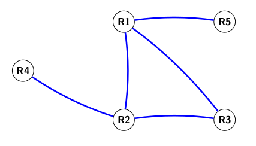

22-NSIJ1G11 : Corrigé
Année : 2022
Centre : Etranger
Jour : 1
Enoncé :
Exercice 1
structures de données (listes, p-uplets et dictionnaires)
-
a. Pour obtenir
"lundi"on accède au second élément de la listejoursavecjours[1]Rappel
La numérotation des éléments d'une liste commence à 0. Ici
"dimanche"correspond donc àjour[0].b.
18%7=4car il reste 4 dans la division de 18 par 7, doncjours[18%7]renvoiejours[4]c'est à dire"jeudi". -
Bug
La syntaxe correct est
jours.index(element)avec des parenthèses et non des crochets comme cela est indiqué dans l'énoncénumero_jour = (jours.index(j)+n)%7 -
a.
mois[3]permet d'accéder au tuple("mars",31)reste à récupérer son second élément avecmois[3][1]pour accéder au nombre de jours.b.
def mois_apres(numero_mois,x): nouveau_num = (numero_mois+x)%12 if nouveau_num == 0: nouveau_num = 12 return mois[nouveau_num][0]Note
- On traite séparement la cas ou le nouveau numéro de mois est 0 qui correspond à décembre donc au mois de numéro 12.
- On a préféré écrire une fonction, l'énoncé demandait "d'écrire le code".
-
a.
mois[date[2]][1]correspond àmois[10][1]c'est à dire à 31 (nombre de jours du mois d'octobre)b.
def jour_suivant(date): # On recupère les éléments de la date : (nom_jour,j,m,a) nom_jour, j, m, a = date[0], date[1], date[2], date[3] nom_jour_suivant = jours[(jours.index(nom_jour) + 1)%7] # si c'est le dernier jour de l'année on change de mois et d'année ! if m == 12 and j==31: j_suivant, m_suivant, a_suivant = 1, 1, a+1 # si c'est le dernier jour d'un mois (pas décembre) on change de mois elif j == mois[m][1]: j_suivant, m_suivant, a_suivant = 1, m+1, a else : # sinon on change juste de jour j_suivant, m_suivant, a_suivant = j+1, m, a return (nom_jour_suivant, j_suivant, m_suivant, a_suivant)
Exercice 2
structures de données (files et la programmation objet en langage python)
-
panier1.enfiler((31002,"café noir",1.50,50525)) -
def remplir(self,panier_temp): while note panier_temp.est_vide(): article = panier_temp.defiler() self.enfiler(article) -
On sauvegarde les éléments du panier dans un panier temporaire de façon à les remettre ensuite dans le panier.
def prix_total(self): panier_temp = Panier() total = 0 while not self.est_vide(): article = self.defiler() total = total + article[2] panier_temp.enfiler(article) while not panier_temp.est_vide(): self.enfiler(panier_temp.defiler()) -
Note
- On suppose ici que l'ordre des articles dans le panier ne correspond pas forcément à l'ordre dans lequel ils ont été scannés. On recherche donc les horaires de scan minimales et maximales en parcourant le panier.
- Cette méthode renvoie la durée entre le premier scan d'article et le dernier. Si un seul article a été acheté c'est donc 0, cela ne correspond donc pas à la durée des achats indiquée dans l'énoncé
def duree_courses(self): if self.est_vide(): return 0 # initialisation avec l'horaire du scan du premier article debut, fin = self.defiler()[3], self.defiler()[3] while not self.est_vide(): article = self.defiler() if article[3] < debut: debut = article[3] if article[3] > fin: fin = article[3] return fin-debut
Exercice 3
structures de données (dictionnaires)
-
graph TB DO[Documents] --> AD[Administratif] AD --> C(certificat_JDC.pdf) AD --> AR(attestation_recensement.pdf) DO --> CO[Cours] CO --> NSI[NSI] NSI --> TP(TP.html) NSI --> DM(dm.odt) CO --> PH[Philo] PH --> TL(Tractatus_logico-philosophicus.epub) DO --> LC(liste_de_courses.txt) -
a.
1 2 3 4 5
def Parcourir(racine,adr): dossier = racine for nom_dossier in adr: dossier = dossier[nom_dossier] return dossierb. L'instruction
Afficher(Documents, ["Cours", "NSI"],"TP.html")affichera 60. En effet cela affiche la valeur associée à la clé"TP.html". -
a. L'erreur se situe à la ligne 3, pour la corriger on remplace par
dossier[nom_fichier] = taille:1 2 3
def ajoute_fichier(racine, adr, nom_fichier, taille): dossier = parcourt(racine, adr) dossier[nom_fichier] = tailleb. Pour ajouter un dossier, on parcourt jusqu'à l'adresse demandée et on ajoute le dossier sous la forme d'un dictionnaire vide
{}def Ajouter_dossier(racine,adr,nom_dossier): dossier = Parcourir(racine,adr) dossier[nom_dossier] = {} -
def taille(dossier): total_ko = 0 for k in dossier: total_ko += dossier[k] return total_ko
Exercice 4
les bases de données
-
a.
id_mesurepeut servir de clé primaire car c'est un numéro unique. Par contre, deux mesures peuvent être issues du même centre (et donc avoir le mêmeid_centre) ou avoir les mêmes valeurs de pluviométrie, température ou pression.b. Une jointure s'effectue avec une clé étrangère, ici
id_centrede la tableMesurespermet donc d'effectuer une jointure avec la tableCentres -
a.Cette requête affiche les enregistrements de la table
Centresdont l'altitude est supérieure à 500. Cela correspond donc à :id_centrenom_villelatitudelongitudealtitude138 Grenoble 45.185 5.723 550 185 Tignes 45.469 6.909 2594 126 Le Puy-en-Velay 45.042 3.888 744 317 Gérardmer 48.073 6.879 855 b.
SELECT nom_ville FROM Centres WHERE altitude >= 700 AND altitude <= 1200;c.
SELECT longitude, nom_ville FROM Centres WHERE longitude > 5 ORDER BY nom_ville ASC; -
a. Cette requête affiche les enregistrements de la table
Mesurespour la date du 30 octobre 2021.b.
INSERT INTO Mesures VALUES (3650, 138, 2021-11-08, 11, 1013, 0); -
a. Cette requête l'enregistrement de la table
Centresayant la latitude minimale.b.
SELECT DISTINCT nom_ville FROM Centres JOIN Mesures ON Centres.id_centre = Mesures.id_centre WHERE Mesures.temperature < 10.0 AND Mesures.date_mesure >= 2021-10-01 AND Mesures.date < 2021-11-01;
Exercice 5
architecture matérielle des ordinateurs, les réseaux et sur les protocoles de routage
Bug
Le sujet comporte une faute d'orthographe on parle de System on Chip et pas de System on a cheap.
-
a. Contrairement à un ordinateur classique où les divers composants sont séparés, un Soc intègre sur la même puce la cpu, la ram, et d'autres périphériques (ex : Bluetooth, Wifi, ...). L'avantage est un gain de performance et une plus faible consommation d'énergie. Par contre, on ne peut réparer ni faire évoluer le SoC.
b. En consultant le tableau comparatif des deux SoC on constate à la ligne interface réseau que seul le BCM71 en possède une et permet donc une connexion à un réseau filaire.
c. On peut comparer le nombre de coeurs, la fréquence de base du processeur et aussi la mémoire cache pour constater que le BCM271 est plus puissant. Ce dernier SoC possède aussi un processeur graphique gpu.
-
a. Une adresse mac identifie de façon unique une carte réseau, elle y est stockée et ne peut pas être modifiée.
b.
10.0.2.15est une adresse ip permettant d'identifier une machine sur le réseau (cette adresse peut changer)c. L'adresse
10.0.2.2correspond à une passerelle reliée au routeur qui achemine les données aux machines extérieures. -
a. On examine les tables de routages pour constater que R1 est relié à R2, R3 et R5 de même R2 est relié à R3 et R4, etc ... Ce qui permet de construire le tracé suivant : 
b. Puisqu'on utilise le protocole rip, on doit minimiser le nombre de sauts pour se rendre de R4 à R5, la route sera R4 - R2 - R1 - R5.
c. D'après la formule de l'énoncé les débits de 100 Mbits/s correspondent à un coût de 1 et les débits de 10 Mbits/s à un coût de 10. C'est à dire :

Cette fois c'est donc le chemin R4 - R2 - R3 - R1 - R5 qui sera emprunté pour un coût total de 22.